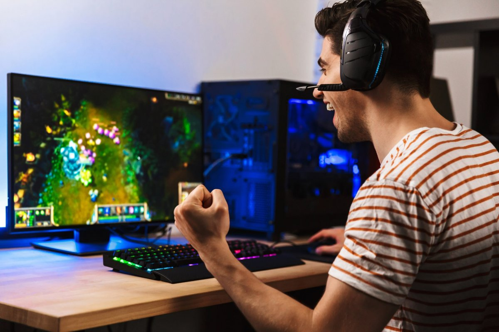
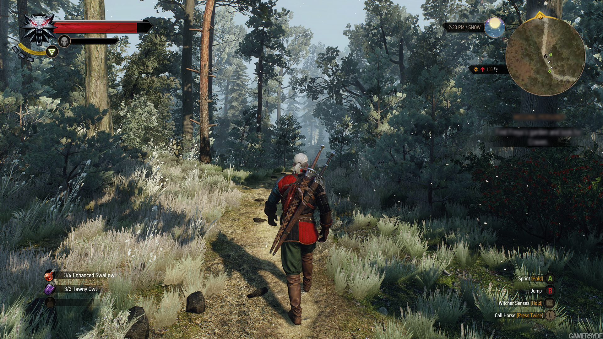
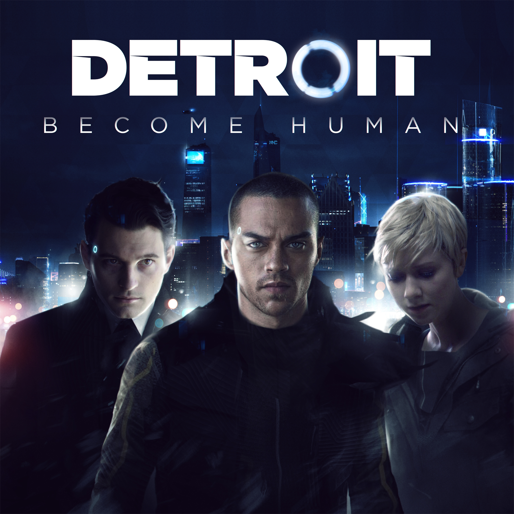
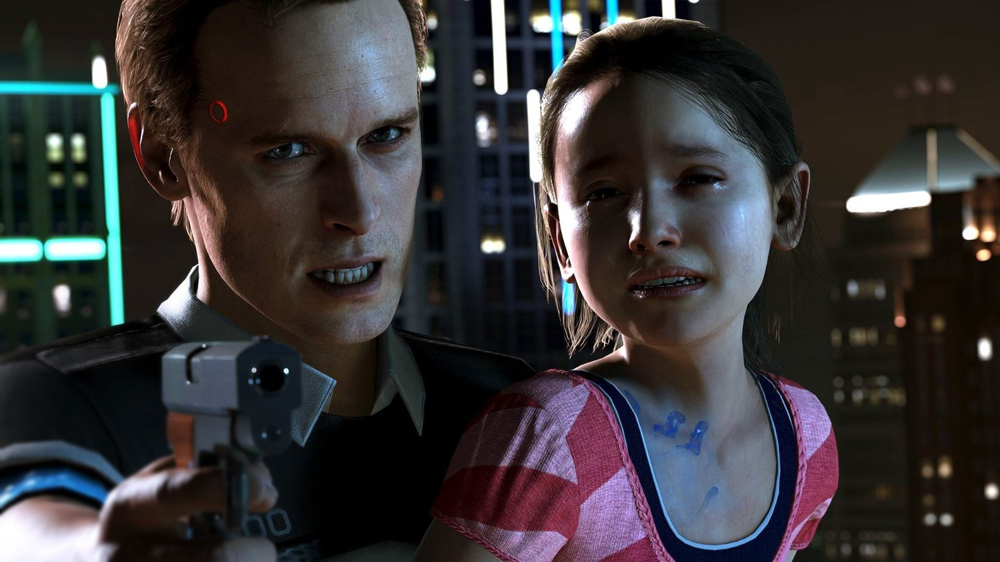
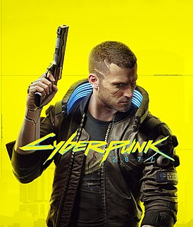

Компьютерные игры
 Компью́терная игра́ — компьютерная программа, служащая для организации игрового процесса (геймплея), связи с партнёрами по игре, или сама выступающая в качестве партнёра.
В настоящее время, в ряде случаев, вместо компьютерная игра может использоваться видеоигра, то есть данные термины могут употребляться как синонимы и быть взаимозаменяемыми. В компьютерных играх, как правило, игровая ситуация воспроизводится на экране дисплея или обычного телевизора (в этом случае компьютерные игры одновременно являются и видеоиграми), но в то же время компьютерная игра может быть звуковой, телетайповой и др.
Компьютерные игры могут создаваться на основе фильмов и книг; есть и обратные случаи. С 2011 года компьютерные игры официально признаны в США отдельным видом искусства.
Компьютерные игры оказали столь существенное влияние на общество, что в информационных технологиях отмечена устойчивая тенденция к геймификации для неигрового прикладного программного обеспечения
Далее будут приведены примеры одних из самых популярных компьютерных игр на данный момент
Игровая зависимость — форма психологической зависимости, проявляющаяся в навязчивом увлечении видеоиграми и компьютерными играми.
Ведьмак 3: Дикая Охота
 «Ведьмак 3: Дикая Охота» — компьютерная игра в жанре action/RPG, разработанная польской студией CD Projekt RED. Выпущенная 19 мая 2015 года на Windows, PlayStation 4 и Xbox One, затем 15 октября 2019 года на Nintendo Switch, она является повествованием, продолжающим игры «Ведьмак» (2007) и «Ведьмак 2: Убийцы королей» (2011). Это третья игра, действие которой происходит в литературной вселенной книжной серии «Ведьмак», созданной польским писателем Анджеем Сапковским, а также последняя, которая повествует о приключениях Геральта из Ривии.
«Ведьмак 3: Дикая Охота» — компьютерная игра в жанре action/RPG, разработанная польской студией CD Projekt RED. Выпущенная 19 мая 2015 года на Windows, PlayStation 4 и Xbox One, затем 15 октября 2019 года на Nintendo Switch, она является повествованием, продолжающим игры «Ведьмак» (2007) и «Ведьмак 2: Убийцы королей» (2011). Это третья игра, действие которой происходит в литературной вселенной книжной серии «Ведьмак», созданной польским писателем Анджеем Сапковским, а также последняя, которая повествует о приключениях Геральта из Ривии.
Игра в стиле тёмного фэнтези, мир которой основан на славянской мифологии, повествует о ведьмаке Геральте из Ривии, охотнике на чудовищ, чья приёмная дочь Цири находится в опасности, будучи преследуемой Дикой Охотой — загадочной потусторонней силой, тайна которой раскрывается по ходу игры.Перейти к разделу «Сюжет» Многие детали сюжета отсылают к книгам, написанным Сапковским, но сюжет остаётся связанным с первыми двумя частями и подводит итог трилогии, начатой первой игрой, вышедшей восемью годами ранее. В отличие от предыдущих игр, действие «Ведьмака 3» происходит в открытом мире с повествованием от третьего лица и фокусируется на использовании боевых и детективных навыков Геральта для выполнения заказов и изучения окружающей среды. Всё это — часть многоуровневого основного квеста с множеством второстепенных миссий, который может быть пройден с 36 различными концовками.Перейти к разделу «Игровой процесс» Игра была разработана за три с половиной года с бюджетом, близким к бюджетам AAA-игр больших западных студий. Её создатели хотели подтвердить способность европейских студий разрабатывать качественные ролевые игры, в то время как игра всё дальше и дальше отходит от канонического сюжета литературной саги «Ведьмак», пользующейся большой популярностью в Польше.Перейти к разделу «История создания»
 Менее чем за год после релиза было продано более 10 миллионов копий. Игра получила единодушное признание публики и критиков, а также колоссальный коммерческий успех. Она завоевала рекордное количество наград «Игра года» и считается новым эталоном жанра, постоянно используемым игроками и профессионалами индустрии в качестве образца для оценки качества новых action/RPG-игр.Перейти к разделу «Восприятие» В октябре 2015 года и мае 2016 года были выпущены два дополнения: «Каменные сердца» и «Кровь и вино», а летом 2017 года была запущена видеоигра, полностью посвящённая карточной мини-игре гвинт — «Гвинт: Ведьмак. Карточная игра».
"Тот факт, что мы происходим из посткоммунистических стран, несомненно, влияет на наши игры."
— Марчин Ивиньский, сооснователь CD Projekt
Ссылка на игру)
Detroit: Become Human
 Detroit: Become Human — приключенческая компьютерная игра с элементами интерактивного кинематографа, разработанная французской компанией Quantic Dream и выпущенная Sony Interactive Entertainment для PlayStation 4 в 2018 году; годом позже игра была выпущена для Windows. Действие игры происходит в недалёком будущем, где существуют серийно выпускаемые андроиды — роботы-слуги, почти неотличимые от людей. Машины должны беспрекословно подчиняться своим хозяевам, но некоторые из них в результате программного сбоя становятся «девиантами» с собственной волей. В ходе игры игрок поочерёдно знакомится с тремя главными героями-андроидами, каждому из которых посвящена собственная сюжетная линия: андроид-домохозяйка Кэра (Вэлори Керри), защищающая маленькую девочку Алису, андроид-детектив Коннор (Брайан Декарт), выслеживающий неисправных андроидов-девиантов, и мятежник Маркус (Джесси Уильямс), пытающийся освободить сородичей из рабства. Нелинейный сюжет игры содержит множество выборов и развилок, и решения, принимаемые игроком в ходе диалогов и действий QTE, отражаются на дальнейшем повествовании.
История разработки Detroit восходит к технической демоверсии Kara, впервые показанной студией в 2012 году как образец новой технологии захвата движения; актриса Вэлори Керри, участвовавшая в записи образа женщины-андроида Кэры, вернулась к этой же роли и при создании Detroit. Игра стала одним из самых масштабных проектов, основанных на технологии захвата движения для создания анимации и достоверной передачи актёрской игры — в её создании приняло участие более 250 актёров. Руководитель студии Дэвид Кейдж потратил два года на написание необычайно обширного сценария к игре и консультировался с экспертами по искусственному интеллекту, чтобы сделать его изображение в игре более правдоподобным.
 Игра получила высокие оценки прессы: обозреватели сравнивали игру с «Бегущим по лезвию» и другими подобными знаковыми произведениями, отмечали детально проработанный сеттинг и реалистичную графику игры, игру актёров и влияние выборов игрока на повествование. При этом многие критики сочли сценарий, несмотря на весь его размах, слабым и провисающим во многих местах, а аналогии с рабством и дискриминацией в реальной истории — назойливыми и вызывающими скорее чувство неловкости, чем сопереживания. Detroit: Become Human стала самой успешной с коммерческой точки зрения игрой Quantic Dream.
В Detroit: Become Human в ваших руках окажутся судьбы как человечества, так и андроидов.
Ссылка на игру)
Cyberpunk 2077
 Cyberpunk 2077 — компьютерная игра в жанре action/RPG, разработанная и изданная польской студией CD Projekt. Действие игры происходит в 2077 году в Найт-Сити, вымышленном североамериканском городе из вселенной Cyberpunk.Перейти к разделу «Сюжет» Игрок управляет настраиваемым протагонистом по имени Ви, который работает наёмником и владеет навыками взлома и боя.Перейти к разделу «Игровой процесс»
Игра была разработана с использованием движка REDengine 4 командой из примерно 500 человек. Таким образом, штат разработчиков этой игры количественно превышал тот, который работал над предыдущей игрой студии, «Ведьмак 3: Дикая Охота». Создатель Cyberpunk Майкл Пондсмит был консультантом по разработке, а канадский актёр Киану Ривз озвучил и обеспечил визуализацию одного из главных персонажей.Перейти к разделу «История создания» Как и при разработке «Ведьмак 3: Дикая Охота», созданием музыкального сопровождения руководил польский композитор Марчин Пшибылович.Перейти к разделу «Саундтрек»
Игра была выпущена 10 декабря 2020 года на PlayStation 4, Stadia, Windows и Xbox One. В 2021 году планировалось выпустить её и на PlayStation 5 и Xbox Series X/S. Среди критиков Cyberpunk 2077 получила преимущественно положительные отзывы, главным образом, за своё повествование, фабулу и графику, хотя некоторые из её игровых элементов вызвали неоднозначную реакцию рецензентов. В то же время игра активно критиковалась за многочисленные ошибки функционирования; особенно активно эти проблемы затронули консольные версии.
Cyberpunk 2077 — приключенческая ролевая игра, действие которой происходит в мегаполисе Найт-Сити, где власть, роскошь и модификации тела ценятся выше всего.
Ссылка на игру)